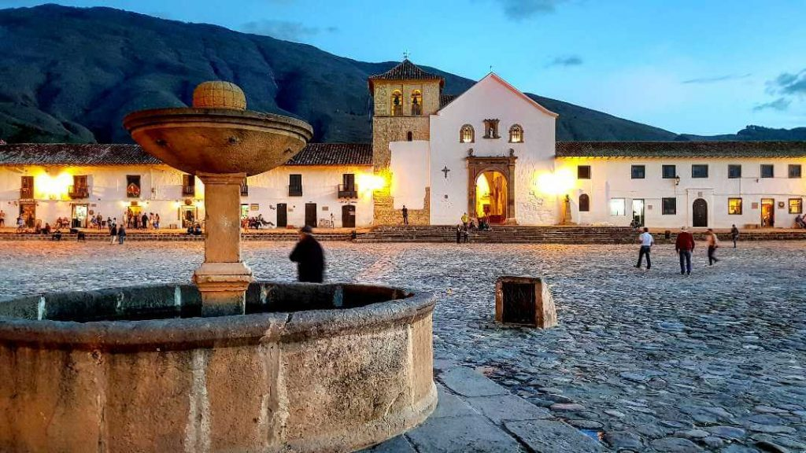
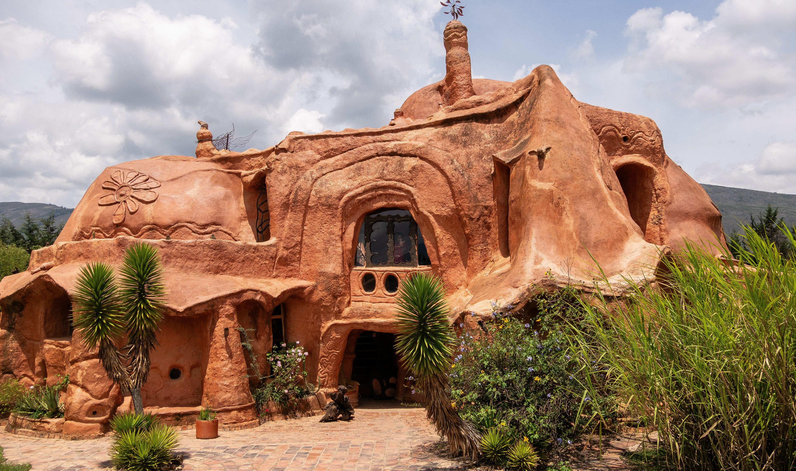
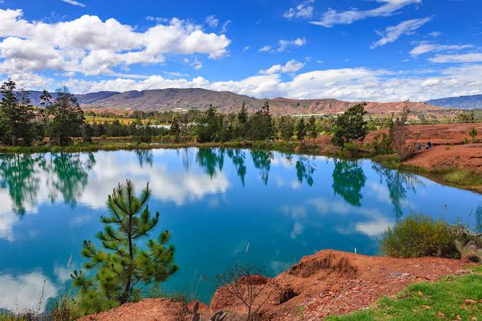
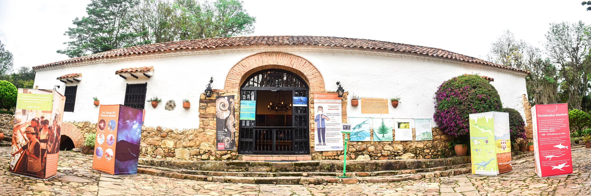
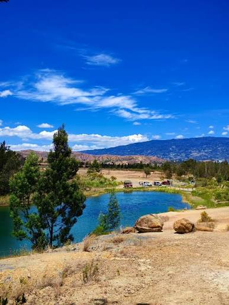
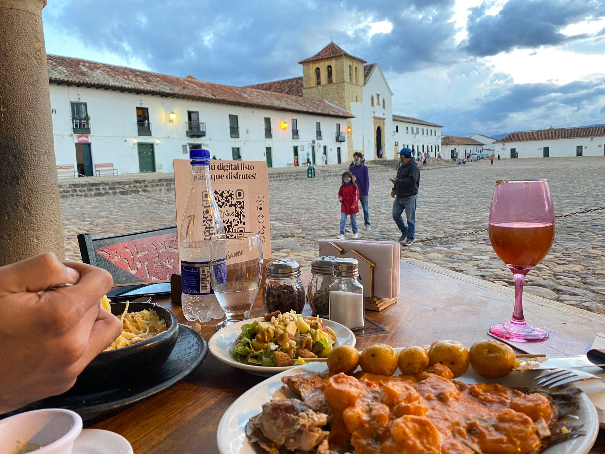
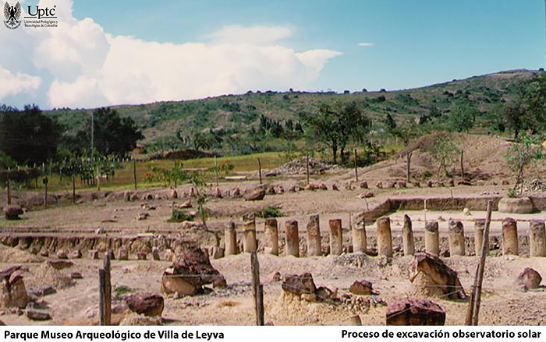
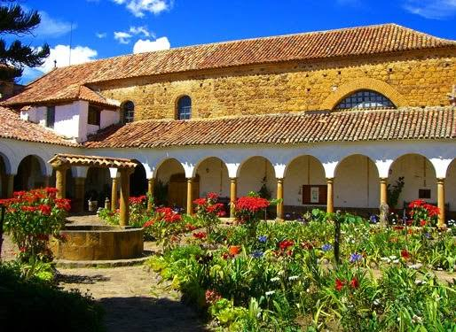

Descubre la magia de Villa de Leyva 🏘️
Un destino lleno de historia, cultura y naturaleza
Villa de Leyva es uno de los municipios más hermosos del departamento de Boyacá. Se caracteriza por sus calles empedradas, sus casas blancas, sus balcones coloniales y sus paisajes naturales. Es un lugar donde la historia y la tranquilidad se unen para ofrecer una experiencia inolvidable a sus visitantes.
Este municipio fue fundado en 1572 y conserva gran parte de su arquitectura colonial. Su impresionante Plaza Mayor, sus construcciones antiguas y sus tradiciones culturales lo convierten en uno de los destinos turísticos más importantes de Colombia.

¿Qué experiencias puedes disfrutar?
En Villa de Leyva puedes disfrutar de recorridos por sus calles históricas, visitar tiendas artesanales, conocer museos, probar deliciosos platos típicos y contemplar sus hermosos paisajes. También puedes realizar caminatas ecológicas y actividades de aventura.
Principales atractivos turísticos
Villa de Leyva cuenta con diferentes lugares turísticos que representan su riqueza histórica, cultural y natural. Estos son algunos de los sitios más conocidos que puedes visitar.

Plaza Mayor
Conoce una de las plazas empedradas más grandes y hermosas de Colombia.

Casa Terracota
Descubre una construcción sorprendente elaborada principalmente en barro.

Pozos Azules
Disfruta de sus llamativas aguas azules rodeadas de naturaleza.

Museo Paleontológico
Conoce los fósiles y la historia natural de esta región.

Desierto de Villa de Leyva
Explora un paisaje natural de terrenos secos y formaciones geológicas.
Tradiciones y gastronomía
La gastronomía de Villa de Leyva conserva sabores tradicionales de Boyacá. Entre sus preparaciones se encuentran el cocido boyacense, la arepa boyacense, las almojábanas y los dulces tradicionales. Sus celebraciones culturales y ferias artesanales también hacen parte de su identidad.

Además de su comida típica, Villa de Leyva se destaca por sus artesanías, festivales, celebraciones religiosas y eventos culturales. Estas tradiciones permiten conocer las costumbres de sus habitantes y conservar la identidad cultural de la región.
Lugares que no te puedes perder
-
Plaza Mayor
La Plaza Mayor es uno de los lugares más representativos de Villa de Leyva y se considera una de las plazas empedradas más grandes de Colombia, con aproximadamente 14.000 metros cuadrados. Se encuentra en el centro histórico del municipio y se caracteriza por su suelo de piedra, sus construcciones coloniales de color blanco y una fuente de agua ubicada en el centro. A su alrededor se encuentran la iglesia de Nuestra Señora del Rosario, restaurantes, tiendas de artesanías y diferentes establecimientos comerciales. Es un espacio de encuentro para habitantes y visitantes, donde también se realizan festivales, celebraciones y actividades culturales.
-
Casa Terracota
La Casa Terracota es una construcción muy particular ubicada en Villa de Leyva, reconocida por ser una de las casas de cerámica y barro más grandes del mundo. Fue diseñada por el arquitecto colombiano Octavio Mendoza y elaborada principalmente con arcilla, utilizando técnicas de moldeado y cocción. Su estructura tiene formas curvas y originales que se integran con el paisaje natural. En su interior se pueden observar habitaciones, muebles, mesas, camas y diferentes elementos fabricados con barro. Este lugar combina la arquitectura, el arte y la creatividad, convirtiéndose en uno de los atractivos turísticos más curiosos del municipio.
-
Pozos Azules
Pozos Azules es un atractivo natural ubicado a las afueras de Villa de Leyva. Está conformado por varias lagunas artificiales que llaman la atención por el color azul turquesa de sus aguas, el cual contrasta con los tonos secos y amarillentos del paisaje que las rodea. Este lugar ofrece un ambiente tranquilo para disfrutar de la naturaleza, tomar fotografías y realizar caminatas por sus alrededores. Es uno de los sitios más visitados por los turistas debido a su belleza y a sus paisajes únicos. Es importante tener en cuenta que no está permitido bañarse en sus aguas, por lo que se recomienda respetar las indicaciones del lugar.
-
Museo Paleontológico
El Museo Paleontológico de Villa de Leyva pertenece a la Universidad Nacional de Colombia y se encuentra en una antigua construcción colonial conocida como el Molino de la Osada. Este museo conserva una importante colección de fósiles que permiten conocer cómo era la vida en esta región hace millones de años, cuando gran parte del territorio estaba cubierto por el mar. Entre sus exhibiciones se encuentran restos de animales marinos, plantas y organismos pertenecientes principalmente al periodo Cretácico. Es un lugar de gran importancia científica, educativa y cultural, ya que permite aprender sobre la evolución de la vida, la historia geológica y la riqueza paleontológica de Villa de Leyva.
-
Desierto de Villa de Leyva
El Desierto de Villa de Leyva es una zona de paisaje semidesértico que se caracteriza por sus terrenos secos, montañas de tonos rojizos y amarillentos, vegetación escasa y formaciones naturales creadas por la erosión. Aunque se conoce popularmente como desierto, no es un desierto de arena como los que se encuentran en otras partes del mundo, sino un territorio con condiciones secas y una apariencia árida. Esta zona tiene un gran valor geológico y paleontológico, porque hace millones de años estuvo cubierta por el mar y en sus alrededores se han encontrado numerosos fósiles. Es un destino ideal para apreciar la naturaleza, realizar recorridos y conocer parte de la historia de la Tierra.
-
Parque Arqueológico de Monquirá

El Parque Arqueológico de Monquirá, conocido popularmente como El Infiernito, es un importante sitio arqueológico ubicado a pocos kilómetros del centro de Villa de Leyva. Este lugar conserva antiguos monumentos de piedra que fueron construidos por comunidades prehispánicas y que tienen aproximadamente 2.200 años de antigüedad. Entre sus principales elementos se encuentran grandes columnas de piedra organizadas en diferentes espacios. Según las investigaciones, el sitio pudo haber sido utilizado para realizar ceremonias y rituales relacionados con la fertilidad, así como para observar los movimientos del sol y reconocer las temporadas del año. Es un espacio de gran importancia histórica y cultural porque permite conocer las costumbres, los conocimientos y las creencias de los antiguos habitantes de la región.
-
Convento de Santo Ecce Homo

El Convento de Santo Ecce Homo es una construcción religiosa e histórica ubicada en el campo, en los alrededores de Villa de Leyva, cerca del municipio de Sutamarchán. Fue fundado por la comunidad dominica durante el siglo XVII y se destaca por su arquitectura colonial, sus paredes de piedra, sus corredores y su hermoso patio central. En su interior se pueden apreciar elementos religiosos, obras de arte, objetos antiguos y detalles arquitectónicos que reflejan la vida de las comunidades religiosas durante la época colonial. Además de su importancia espiritual, el convento representa una parte fundamental de la historia y el patrimonio cultural de la región, siendo un lugar que invita a conocer el pasado religioso de Boyacá. Aunque suele incluirse en los recorridos turísticos de Villa de Leyva, el Convento de Santo Ecce Homo está ubicado en jurisdicción de Sutamarchán, Boyacá, en la vía que comunica con Villa de Leyva. Fue fundado por los frailes dominicos el 15 de marzo de 1620. Su arquitectura conserva un claustro con corredores, patios y gruesos muros de piedra, además de elementos religiosos e históricos que reflejan la época colonial. Este monasterio es considerado patrimonio arquitectónico de Colombia y representa un importante legado de la historia religiosa de la región.
Conoce más sobre Villa de Leyva
Si deseas descubrir más información sobre este hermoso municipio, sus actividades y sus atractivos turísticos, visita el siguiente enlace:
Conoce más sobre Villa de Leyva haciendo clic aquí
Asistente virtual de Villa de Leyva MILA
¿Tienes preguntas sobre Hospedajes disponibles en Villa de Leyva? Interactúa con nuestra asistente virtual Mila y descubre más información sobre sus diferentes Hoteles, Precios y Servicios.